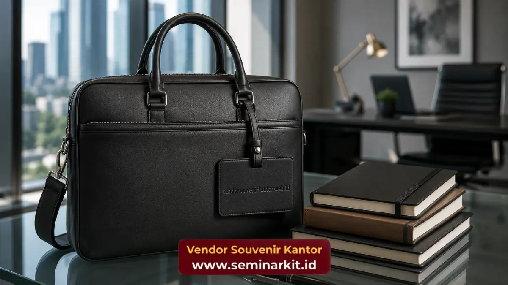

Souvenir kantor untuk karyawan adalah barang yang diberikan perusahaan kepada tenaga kerjanya sebagai bentuk penghargaan atas kontribusi, loyalitas, atau pencapaian tertentu selama bekerja.
Pemberian ini umum dilakukan pada momen seperti hari jadi perusahaan, akhir tahun, atau pencapaian target kerja.
Souvenir yang tepat mampu meningkatkan rasa dihargai dan memperkuat budaya kerja positif di lingkungan perusahaan.
- Souvenir karyawan berperan sebagai bentuk apresiasi yang memperkuat rasa memiliki terhadap perusahaan.
- Pemilihan jenis souvenir sebaiknya mempertimbangkan kebutuhan sehari-hari karyawan agar nilai gunanya tinggi.
- Momen pemberian dapat disesuaikan dengan pencapaian individu, tim, maupun perayaan perusahaan secara umum.
- Souvenir yang konsisten dengan identitas perusahaan turut memperkuat rasa kebersamaan tim.
- vendorsouvenirkantor.web.id menyediakan pilihan souvenir karyawan yang dapat disesuaikan dengan anggaran dan jumlah tim Anda.
Apa Itu Souvenir Kantor untuk Karyawan dan Mengapa Diberikan?
Souvenir kantor untuk karyawan adalah bentuk penghargaan berupa barang yang diberikan perusahaan sebagai ucapan terima kasih atas kinerja, dedikasi, atau momen tertentu dalam perjalanan karier karyawan di perusahaan.
Pemberian ini dapat bersifat rutin, seperti pada perayaan akhir tahun, maupun insidental, seperti penghargaan atas pencapaian target kerja tertentu.
Souvenir karyawan berbeda dari insentif finansial karena nilainya lebih bersifat simbolis dan emosional.
Barang yang diberikan menjadi representasi fisik dari pengakuan perusahaan terhadap kontribusi karyawan, yang pada gilirannya dapat memperkuat ikatan emosional antara karyawan dan tempat kerjanya.
Mengapa Souvenir Penting bagi Motivasi dan Budaya Kerja Karyawan?
Pemberian souvenir kepada karyawan secara umum berkontribusi terhadap peningkatan motivasi kerja karena menciptakan perasaan diakui dan dihargai atas kontribusi yang telah diberikan.
Rasa dihargai ini erat kaitannya dengan tingkat keterikatan karyawan terhadap perusahaan. Karyawan yang merasa diperhatikan cenderung menunjukkan sikap kerja yang lebih positif, termasuk dalam hal kolaborasi tim dan komitmen terhadap target kerja bersama.
Souvenir yang diberikan secara konsisten juga dapat membentuk budaya kerja yang lebih hangat dan suportif dalam jangka panjang.
Di sisi lain, souvenir kantor turut berperan dalam memperkuat identitas kolektif tim. Ketika seluruh anggota tim menerima souvenir dengan desain yang seragam, muncul rasa kebersamaan dan kesetaraan yang mendukung terciptanya lingkungan kerja yang inklusif.

Jenis Souvenir Kantor yang Cocok untuk Karyawan
Jenis souvenir yang cocok untuk karyawan umumnya berupa barang fungsional yang dapat digunakan dalam aktivitas kerja sehari-hari, seperti tumbler, tas kerja, alat tulis, hingga perlengkapan elektronik ringan.
Tumbler dan alat makan reusable menjadi pilihan populer karena mendukung gaya hidup praktis sekaligus ramah lingkungan.
Tas kerja atau tas laptop juga banyak diminati karena nilai gunanya yang tinggi dalam mobilitas kerja karyawan sehari-hari.
Selain itu, perlengkapan elektronik ringan seperti power bank atau flash disk custom logo turut menjadi favorit karena relevansinya dengan kebutuhan kerja modern.
Untuk momen tertentu seperti hari jadi perusahaan, souvenir dengan nilai simbolis seperti plakat kecil atau merchandise edisi khusus juga dapat menjadi pilihan yang menambah kesan personal dan mengenang pencapaian bersama.
Kapan Waktu yang Tepat Memberikan Souvenir kepada Karyawan?
Waktu yang tepat untuk memberikan souvenir kepada karyawan meliputi perayaan akhir tahun, hari jadi perusahaan, pencapaian target kerja, hingga momen onboarding karyawan baru.
Pada momen perayaan akhir tahun, souvenir sering diberikan sebagai bagian dari rangkaian apresiasi atas kerja keras karyawan sepanjang tahun.
Hari jadi perusahaan juga menjadi momen umum untuk memberikan souvenir bertema khusus yang mencerminkan perjalanan dan pencapaian perusahaan.
Selain itu, pencapaian target kerja baik individu maupun tim kerap dijadikan momentum pemberian souvenir sebagai bentuk pengakuan atas kontribusi yang telah diberikan.
Momen onboarding karyawan baru turut menjadi kesempatan baik untuk memberikan welcome kit berupa souvenir kantor, sehingga karyawan baru merasa diterima dan menjadi bagian dari perusahaan sejak hari pertama.
Perusahaan yang ingin memastikan setiap momen tersebut terisi dengan souvenir berkualitas dapat mempercayakan kebutuhan pengadaannya kepada vendorsouvenirkantor.web.id, yang menyediakan berbagai pilihan souvenir karyawan sesuai anggaran dan jumlah tim.

Banner promosi: klik gambar untuk langsung terhubung ke WhatsApp tim sales.